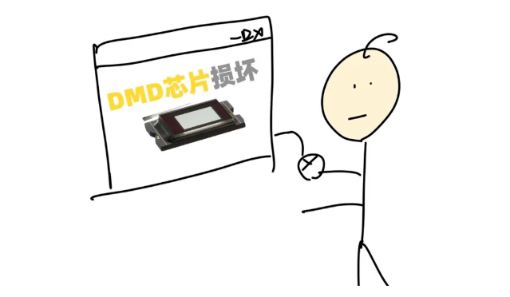
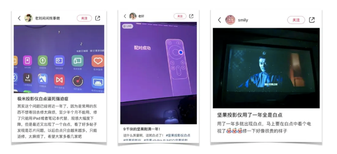
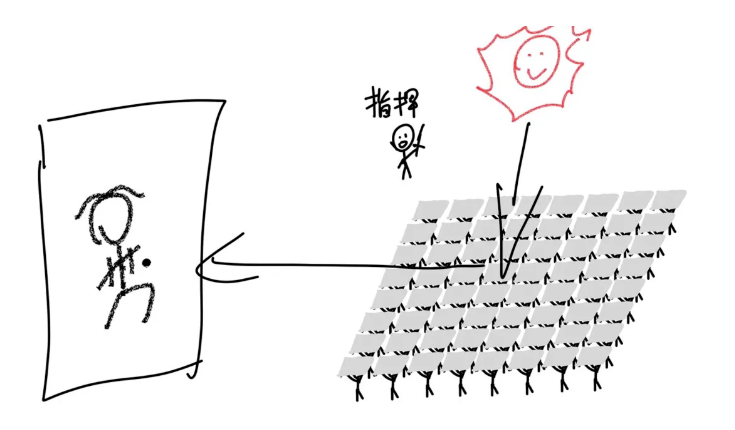
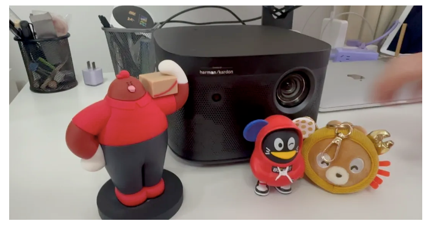
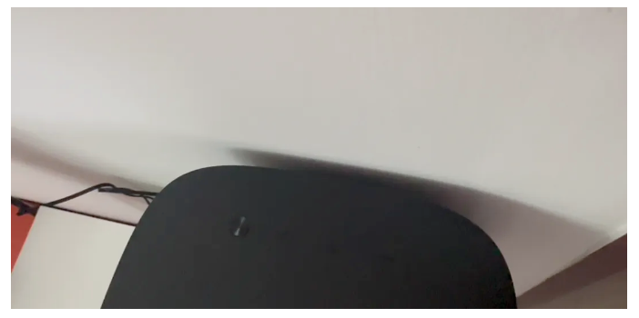
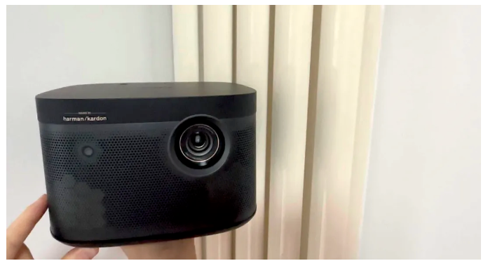
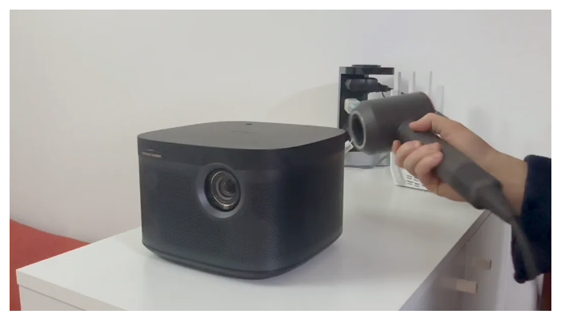
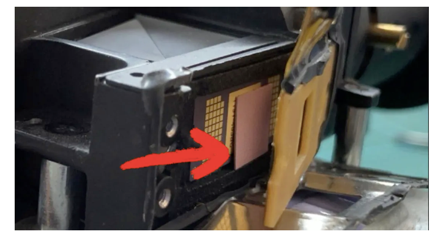

最近我家投影仪的画面上方出现了一个莫名其妙的小白点：

虽然不怎么影响观看，但是注意力总是被吸引过去，简直要逼死强迫症啊！
于是我就上网查，发现是一个叫DMD的芯片出了问题。

很多网友都反馈遇到过类似情况：

据说，一旦出现一个白点，就像这样：

之后就会越来越多：

直到占满整个屏幕，让人密集恐惧症当场发作，然后投影仪就基本可以下岗了。

不行就修一下吧，一问，不好意思，换DMD芯片一千二，我真是当场就跪了。
我心想，你这芯片是金子做的吗？投影仪也就三千多，换个芯片就要一千二，正当他要建议我以旧换新，我转身就走了。

查了一下这个所谓的「DMD芯片」，全球能生产这种DMD芯片的居然只有「美国德州仪器」这一家公司，合着投影仪厂家也是在给这家公司打工啊？
而且前两年媒体还报道过DMD芯片「卡脖子」的问题。

这么贵又这么重要，这个DMD芯片到底是干啥的？
其实说起来也简单。
你想象一下，有一个小人，举着一块镜子：

太阳发出的光通过镜子反射到墙上，小人可以通过控制镜子的倾斜角度，来控制墙上这个光斑的明暗度。

好，现在有成千上万个这样的小人，站成整齐的矩阵，通过合理的指挥调度，他们就可以在墙上投射出一幅巨大的黑白画面——墙上的每一个光斑就是一个像素。

这就是目前比较主流的投影方案的基本原理了，国内最近几年卖得比较火的像什么极米啊坚果啊，大多数机型都是用的这种DLP方案。

这个太阳就是投影仪里的灯泡，这群举着镜子的人形成的矩阵，就是DMD芯片。

所以理论上，《三体》里的那个秦始皇完全可以让士兵们举镜子来给自己播放超大银幕电影。

只不过在真正的DMD芯片里，每一块镜子只有14平方微米，14微米是什么概念呢？头发丝的直径通常是50到100微米。

一个能播放4K高清影片的投影仪，DMD芯片上面需要有800多万个微镜片：

每一个镜片都用一个很小很小的微电机来控制倾斜角度：

也就是说，一块DMD芯片里有几十万甚至几百万个微电机，这需要非常精密的制造技术和精细的电子控制技术。
这也是为什么全球只有德州仪器这一家公司能造DMD芯片，核心专利都在他们手里。

DMD芯片最怕也最常遇到的问题就是高温。
如果高温把一个举镜子的「小人儿」给热坏了，就会出现一个小白点或者小黑点。

如果高温把一群「举镜子的小人儿」都热坏了，就会出现很多个一片小白点，就像这样：

所以为了让投影仪能多用几年，咱们在用的时候，投影仪周围尽量不要像这样放一堆东西：

也不要像这样贴到墙上，避免阻碍散热口周围的空气流通：

避免在高温环境下使用，北方的网友记得不要把它放在暖气片边上，夏天就无所谓了。

可以定期清理过滤网，我的办法是擦干净以后，用吹风机吹，再用吸尘器吸（风力不要太大），在不拆机的情况下效果非常不错，每次散热风扇呼呼大响的时候，我清理完就不响了：

使用完以后也不要立刻断电，确保散热风扇已经把余热清理完，正式下班，再切断电源。
但是即使你已经做到这些，DMD芯片还是有可能会过热。
因为芯片上都贴一个硅脂垫片或者涂一些像牙膏一样的硅脂，帮助传导热量，把热量送出去。
但由于长时间加热，两三年以后可能就会变干，导热性能下降。

所以条件允许的话，最好过个一两年感觉散热不太好了就找个师傅换一下硅脂垫片，做个保养什么的。
不过一想到这么麻烦，我就觉得以后还是换个电视机得了。
听说华为最近正在研发另外一种叫LCoS的投影方案，希望一方面能打破外国在投影芯片上的垄断；另一方面也把投影仪的价格打下来，或者把芯片质量提上去。
毕竟，对消费者来说，投影仪能多用两年，也就相当于省钱了嘛~